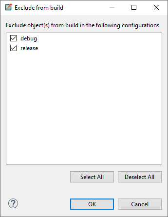
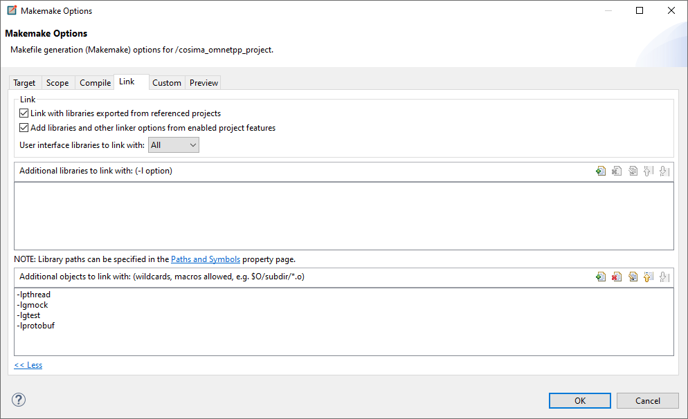

Installation
To use the project, an installation of mosaik (at least version 3.0), OMNeT++ and protobuf are required.
If you use Ubuntu: You can use the Installation Shell Script via
chmod +x install-requirements.sh
sudo ./install-requirements.sh
for the installation tasks. Otherwise, follow the following instructions.
Installation of python packages
Use the package manager pip to install the requirements.txt file.
pip install -r requirements.txt
Installation and configuration of OMNeT++
In order to install OMNeT++ in version 5.6.2, go to their website and follow the instructions for your operating system. In case that you are using Ubuntu (which is recommended), you can also execute the following commands:
Go to home directory
cd ~
Create working directory and enter directory
mkdir -p omnetpp
cd omnetpp
Fetch OMNeT++ source (in version 5.6.2)
wget https://github.com/omnetpp/omnetpp/releases/download/omnetpp-5.6.2/omnetpp-5.6.2-src-linux.tgz
tar -xf omnetpp-5.6.2-src-linux.tgz
Export path
export PATH=$PATH:/usr/omnetpp/omnetpp-5.6.2/bin
Configure and compile
cd omnetpp-5.6.2
./configure PREFER_CLANG=yes
make
Installation and configuration of INET
Install INET 4.2.2 from the OMNeT++ website OMNeT++ INET.
The corresponding release can be found under this link.
Again, under Ubuntu you can navigate to your preferred working directory and execute the following commands:
wget https://github.com/inet-framework/inet/releases/download/v4.2.2/inet-4.2.2-src.tgz
tar -xzf inet-4.2.2-src.tgz
rm inet-4.2.2-src.tgz
mv inet4 inet
cd inet
make makefiles
After your installation, open the OMNeT++ IDE via
omnetpp
In the IDE, you can import the OMNeT++ files of this project as an Existing
Project under
File->Import->General->Existing Projects
into Workspace.
Then choose the INET installation directory as a project reference under
Project Properties -> Project References
in this project.
Now build your project:
Project->Build Project
(Optional) if you want to use LTE networks: Install SimuLTE 1.2.0
Install SimuLTE in the correct version
and set the SimuLTE installation directory under
Project Properties -> Project References
in this project and re-build your project.
After installing all libraries check (and maybe adjust) the Makefile of the project. Under
Project Properties -> OMNeT++ -> MakeMake
adjust the makemakefile of the source folder (“src:makemake”)
under Target: set “Executable”
under Scope: set “Deep Compile”, “Recursive make”
under Compile: add path to INET installation and set “Add include Paths exported from referenced Projects”
under Link: set both ticks. User interface libraries to link with: “all”
You should get a MakeMake option like
--deep -I"C:\Users\user\Omnet-Projekt\inet" --meta:recurse --meta:use-exported-include-paths --meta:export-library --meta:use-exported-libs --meta:feature-ldflags
Installation of protobuf
Install the protobuf compiler version 3.6.1 (on Ubuntu) via
sudo apt-get install libprotobuf-dev protobuf-compiler
The used protobuf message is already compiled. If you want to compile the .proto file or another one use
protoc cosima_core/messages/message.proto --cpp_out=. --python_out=.
The output are the classes message_pb2.py for python and message.pb.cc and message.pb.h for C++. Put the C++ files in the OMNeT++ folder.
Now the generated files can be used in python via
from message_pb2 import InfoMessage
and in C++ via
#include "message.pb.h"
Now add the protobuf installation to your project in OMNeT++ under
Project Properties -> OMNeT++ -> MakeMake -> Options -> Link -> more -> additional objects to link with
add “-lprotobuf”.
Optional: PyTests
To set up testing in python follow these steps:
in PyCharm under Settings -> Python Integrated Tools -> Testing set the Default Test Runner to PyTest
tests can be found in the test folder. The structure of the test folder should correspond to the structure of the project
test files start with “test_”
to run a test execute either a single file or the folder
For further information see info.
Optional: Google-Test and Google-Mock
The process of testing is performed with the unit-testing Framework Google Test with Google Mock. It is generally used to test different functionalities of the cosima project like the AgentApps, the MosaikScenarioManager or the Scheduler Module. Because the tests do not include the functionalities of the Networks itself, there is no need to execute them, when implementing a new Network. For this reason, the tests are excluded from being executed in OMNeT++ by default.
Installing Google Test
The following commands can be used to install the Google Test framework under a Linux distribution. Google Test must be installed, to run any of the tests but is not necessary to execute the project itself.
git clone https://github.com/google/googletest.git -b release-1.11.0
cd googletest
mkdir build
cd build
cmake ..
make
sudo make install
or
sudo apt-get install googletest
cd /usr/src/googletest
sudo cmake CMakeLists.tx
sudo make
sudo make install
Include the Tests and execute them
Executing the tests is possible by doing the following steps…
Including the tests folder To perform Tests for the cosima project first you have to include them in the OMNeT++ Framework. To do so, right-click on the folder tests and then go to Resource Configuration -> Exclude from Build. In the newly opened window you now can uncheck the boxes for the configuration, that you want to perform the tests on. By default, both the configuration for the debug and release mode should be checked.

Update dependencies Next up we have to make sure, that the compiler uses the Google Test libraries, when executinmg the project. Under the Project Properties of our cosima_omnetpp_project, we have to click on OMNeT++ -> Makemake -> Options -> Link -> Additional objects to link with. Here you have to add the following dependencies (-lgmock -lgtest -lpthread). Now all that is left, is to rebuild the project and then executing it. The Tests should now be performed with the rest of the project.
